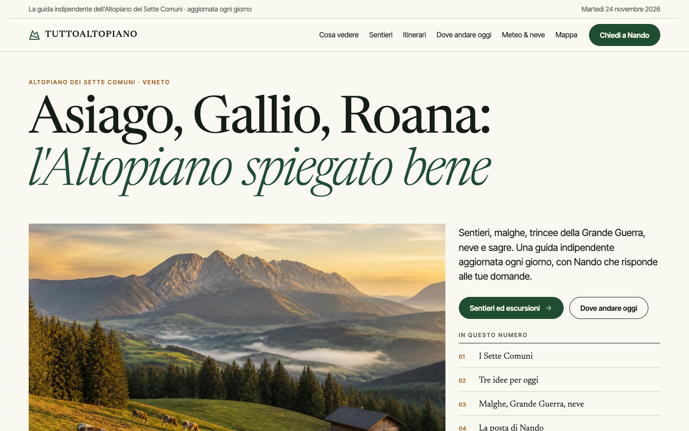

Direzione 1
Rivista d'Altopiano
La homepage diventa il numero del giorno di una rivista di montagna: copertina con titolo grande, sommario, rubriche e servizi fotografici con didascalie in corsivo. È pensata per chi pianifica una gita e vuole leggere prima di partire. Funziona perché TUTTOALTOPIANO è una guida che si aggiorna ogni giorno, e il formato rivista lo dice senza bisogno di spiegarlo.
Newsreader + Inter Tight
Cosa corregge del sito attuale
- Palette riportata all'originale del sito: crema #FAF9F1 al posto della carta #F4F1E8, ocra testo #9F632A al posto di #8A4F1A; nessun colore fuori da data/palettes.json (palette-audit: OK)
- CTA ocra: testo inchiostro #141D16 su ocra #CD8643, contrasto 2.88 (testo #FEFCF4 su ocra, sito attuale) → 5.82
- CTA primaria verde bosco con testo crema: 9.18:1
- Occhielli ocra #9F632A su crema: 4.63:1; nel bollettino su crema scura l'occhiello passa al verde bosco (8.09:1) perché l'ocra testo lì scende a 4.08